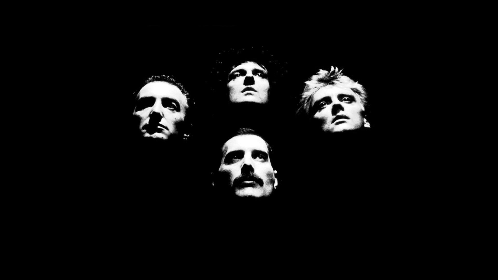
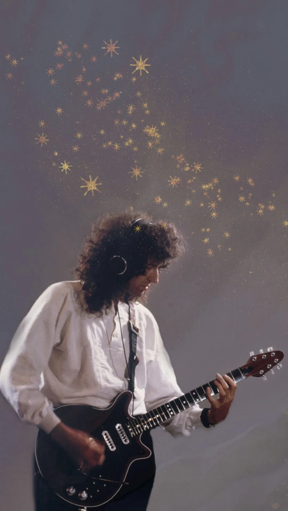

-
La Banda
Queen es una banda británica de rock formada en 1970 en Londres por el cantante Freddie Mercury, el guitarrista Brian May, el baterista Roger Taylor y el bajista John Deacon. Son reconocidos como uno de los grupos de rock más influyentes de la historia y han vendido más de 300 millones de discos en todo el mundo.
-
Freddy Mercury

Freddie Mercury, cuyo nombre real era Farrokh Bulsara, nació el 5 de septiembre de 1946 en Zanzíbar, Tanzania. Fue un cantante, compositor y músico británico de origen parsi. Es ampliamente reconocido como el vocalista principal y líder de la banda de rock Queen. Mercury mostró un gran talento musical desde una edad temprana y recibió una educación clásica en piano. En 1964, se mudó a Inglaterra y estudió diseño gráfico en el Ealing Art College. Allí, se unió a varias bandas locales y comenzó a desarrollar su estilo y habilidades como cantante. En 1970, Freddie Mercury y Brian May formaron Queen junto con John Deacon y Roger Taylor. La banda se convirtió en uno de los mayores exponentes del rock en la década de 1970 y alcanzó un éxito mundial con canciones como "Bohemian Rhapsody", "We Will Rock You" y "Don't Stop Me Now". Mercury era conocido por su poderosa voz, su presencia escénica carismática y su habilidad para escribir canciones icónicas.
-
Brian May - Guitarra
Brian May nació el 19 de julio de 1947 en Hampton, Middlesex, Inglaterra. Es un guitarrista, compositor y astrofísico británico. May comenzó a tocar la guitarra a una edad temprana y se interesó por la música rock mientras estudiaba física en el Imperial College London. En 1970, cofundó la banda Queen junto con Freddie Mercury, John Deacon y Roger Taylor. May es conocido por su estilo de guitarra único y distintivo, que se destaca en canciones como "Bohemian Rhapsody", "Tie Your Mother Down" y "We Will Rock You". Además de su carrera musical, Brian May también obtuvo su doctorado en astrofísica en 2007 y ha realizado contribuciones significativas en el campo de la ciencia.
-
Roger Taylor - Bateria
Roger Taylor nació el 26 de julio de 1949 en King's Lynn, Norfolk, Inglaterra. Es un baterista, cantante y compositor británico. Taylor se unió a Queen en 1970 y rápidamente se destacó por su estilo de batería energético y su voz distintiva. Además de tocar la batería, Taylor también ha contribuido como cantante principal y ha escrito varias canciones para Queen, incluidos éxitos como "Radio Ga Ga", "A Kind of Magic" y "Innuendo". Taylor ha lanzado varios álbumes en solitario y continúa involucrado en proyectos musicales después de la disolución de Queen.
-
John Deacon - Bajo
John Deacon nació el 19 de agosto de 1951 en Oadby, Leicestershire, Inglaterra. Es un bajista y compositor británico. Deacon se unió a Queen en 1971 y se convirtió en el bajista principal de la banda. Además de su habilidad con el bajo, Deacon también contribuyó como compositor, creando éxitos como "Another One Bites the Dust" y "I Want to Break Free". Tras la muerte de Freddie Mercury en 1991, Deacon decidió retirarse de la industria musical y ha llevado una vida privada desde entonces.